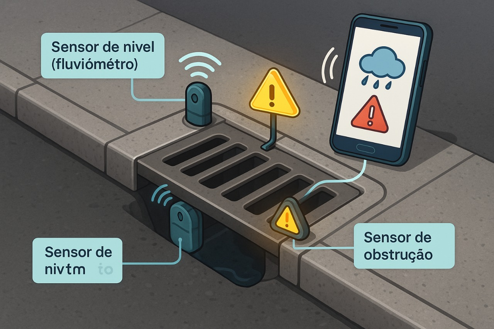
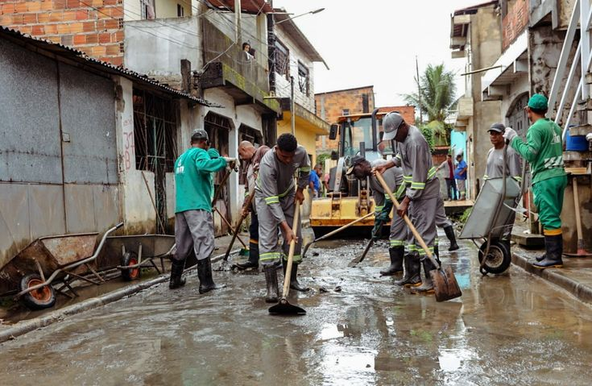

PROBLEMA
Milhares de brasileiros são surpreendidos todos os anos por enchentes devastadoras!
E a pergunta que fica é "Por que essas pessoas ainda são surpreendidas pelas enchentes?"
O cenário alarmante das enchentes no Brasil revela a urgente necessidade de soluções tecnológicas eficientes. Muitos desses desastres poderiam ser evitados com ações preventivas e monitoramento adequado. Assim é mostrado no vídeo, na qual a água das chuvas não encontra vazão por conta da ausência ou obstrução dos bueiros, provocando alagamentos que tomam ruas inteiras em poucos minutos. A falta de sensores nos bueiros, aliada à ausência de dados em tempo real sobre os níveis de água e obstruções, impede uma resposta rápida e eficaz. Além disso, a população das áreas de risco frequentemente não sabe como agir diante de fortes chuvas, por não ter acesso a alertas confiáveis e atualizados. É nesse contexto que o projeto Prever+ surge como uma iniciativa inovadora, propondo o uso de bueiros inteligentes para antecipar riscos, informar comunidades e salvar vidas.
Tecnologias
Para enfrentar o problema das enchentes causadas pela obstrução e falta de monitoramento dos bueiros, desenvolvemos o sistema Prever+, que transforma bueiros comuns em bueiros inteligentes, capazes de monitorar e alertar sobre riscos em tempo real.
Conectividade IoT
Todos os dados coletados pelos sensores são transmitidos em tempo real para uma plataforma central através da conectividade IoT. Isso significa que as equipes responsáveis recebem alertas imediatos sobre riscos de enchentes e obstruções, podendo agir rapidamente. Além disso, a população das áreas afetadas pode ser informada antecipadamente, aumentando a segurança e prevenindo danos.
Fluviômetro
Este sensor é responsável por medir com precisão a altura da água dentro do bueiro. Quando o nível da água começa a subir além do limite seguro, o fluviômetro registra essa mudança imediatamente, permitindo uma avaliação antecipada do risco de alagamento. Essa medição constante é fundamental para evitar surpresas e garantir respostas rápidas.
Sensor de obstrução
O sistema conta também com sensores que detectam qualquer bloqueio dentro do bueiro, como lixo, galhos ou outros detritos que possam impedir a passagem da água. Ao identificar uma obstrução, o sensor envia um alerta, permitindo que a limpeza ou manutenção seja feita antes que o bloqueio cause enchentes.
Objetivos
O projeto Prever+ é uma solução tecnológica baseada em sensores IoT e conectividade inteligente, desenvolvida para monitorar, prever e minimizar os impactos causados por alagamentos e enchentes em áreas urbanas. Por meio da instalação de bueiros inteligentes com sensores de nível de água e obstrução, o sistema atua de forma preventiva, fornecendo dados em tempo real para tomada de decisões rápidas e eficientes.
Por meio da instalação de bueiros inteligentes equipados com sensores avançados, como fluviômetros para medição precisa do nível da água e sensores de obstrução para detectar bloqueios, o sistema possibilita o monitoramento remoto e em tempo real das condições dos bueiros.
Com essa tecnologia IoT, o Prever+ busca antecipar problemas que podem levar a alagamentos, permitindo que as equipes de manutenção atuem preventivamente, evitando danos materiais, transtornos à população e riscos à vida humana. Além disso, o projeto visa incentivar a participação da comunidade na prevenção, por meio de um aplicativo que oferece informações e alertas instantâneos, promovendo uma cultura de responsabilidade compartilhada e sustentabilidade urbana.

Público Alvo
No Brasil, onde milhões de pessoas vivem em áreas de risco e os desastres naturais têm se tornado mais frequentes e intensos, é essencial que soluções como a Prever+ considerem um público-alvo diversificado e estratégico. Em que sua tecnologia possa ser aplicada em diferentes contextos urbanos e adaptada para uso por instituições públicas, privadas e comunidades locais interessadas em inovação.
Porém, é possível destacar o foco de venda do produto para Prefeituras e Defesas Civis, já que esses órgãos desempenham um papel essencial na gestão de riscos urbanos e na proteção da população. São eles os principais responsáveis por implementar políticas públicas de prevenção, executar planos de contingência e responder rapidamente a situações de emergência. A tecnologia, nesse contexto, não é apenas uma ferramenta de automação, é um verdadeiro agente de transformação social e urbana. Ela aproxima o poder público da realidade das comunidades, democratiza o acesso à informação, fortalece a participação do cidadão e promove um modelo de cidade mais humana, segura e resiliente frente aos desafios climáticos que se intensificam a cada ano.

Benefícios
Para enfrentar o problema das enchentes causadas pela obstrução e falta de monitoramento dos bueiros, desenvolvemos o sistema Prever+, que transforma bueiros comuns em bueiros inteligentes, capazes de monitorar e alertar sobre riscos em tempo real.
Aplicação
O sistema Prever+ tem aplicação ampla e flexível, podendo ser implantado em diversos contextos urbanos, especialmente em cidades médias e grandes que enfrentam desafios constantes com enchentes e alagamentos.